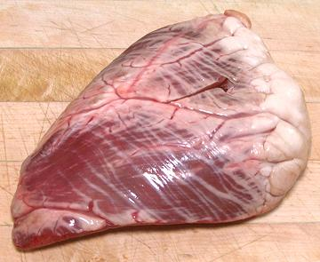
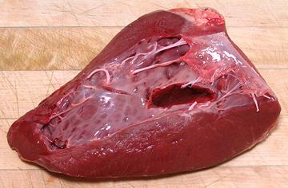

Beef Hearts


Beef Hearts are very large, so they are rarely sold whole. The photo
example, from an Asian market, appears to be about 1/3 of a whole
heart, and with most of the plumbing cut off. It weighed 1 pound 6
ounces, and was 7-1/2 inches long, 4-3/4 inches wide and 1-3/4 inches
thick. Since most Americans don't want to buy any meat that actually
looks like part of an animal, most regular markets sell heart sliced
about 1/2 inch thick with most of the fat cut off.
This is muscle meat, and very well exercised, even tougher than
shank - simmering time will need to be about 3 hours. Hearts are made
of a unique type of muscle, called cardiac muscle. It is a striated
muscle like skeletal muscle, but this is not obvious, it looks smooth.
More on Beef Innards
Buying:
Most Beef Hearts are ground up and included in
various sausages and similar products, but some do appear in better
quality meat markets. The price is reasonable because most people don't
know what to do with them. The photo specimen was purchased from a large
Asian market in Los Angeles for 2016 US $1.99 / pound.
Prep:
Generally all that is needed is to cut off the
thick fat at the top and any remaining plumbing on the inside - then
slice as desired.
Cooking:
Beef Heart needs to be wet cooked for a long
time, about 3 hours at a simmer, so is used mostly in stews and similar
dishes.
Yield:
With the thick fat cut off, the heart in the
photo above yielded 91%. Heart meat purchased sliced may yield about
95%, depending on how picky you are.
ab_heartz 161023 - www.clovegarden.com
©Andrew Grygus - agryg@clovegarden.com - Photos
on this page not otherwise credited © cg1
- Linking to and non-commercial use of this page permitted